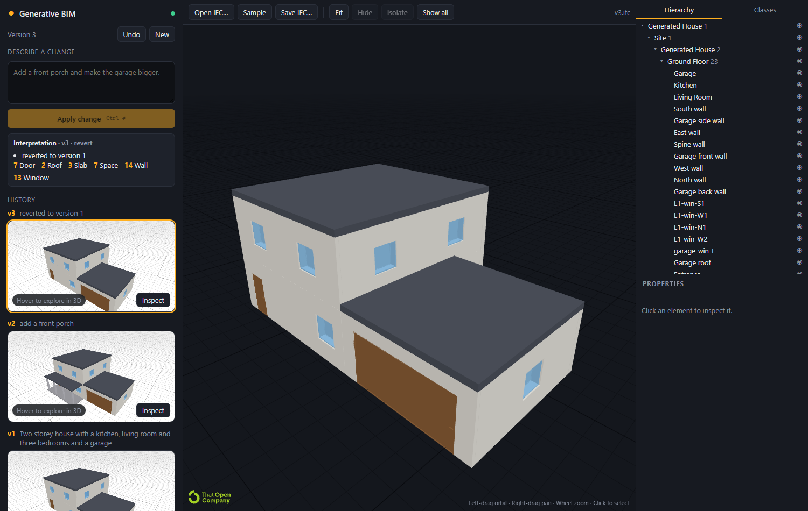

Prompt in.
IFC out.
An agent harness that builds vendor-neutral BIM from scratch. The model never writes IFC, and never writes a wall.
Four people, one harness.
Abhijyot Chadha
MEP and IFC geometry. Risers, panels, wiring; the slicer; the raw three.js viewer engine.
Kailash Kannan
Product UI and the reasoning trace. Ported the redesigned interface onto the versioned projects API; docs.
Drona Thoka
Desktop app and the IFC viewer package. Final-deliverable export as stamped IFC or a zip bundle.
kyriolexy
The agent pipeline. Step-streamed design layer, LLM adapters, requirement checks and live previews.
Everyone is building a Revit copilot.
We built an agent that writes the open standard instead. IFC is ISO 16739: one file that opens in Revit, ArchiCAD, Bentley, Solibri, Navisworks and BlenderBIM.
A plug-in inside one vendor's file
Locked to a licence, a version and a UI. The model is an autocomplete for someone else's data model.
An agent harness that builds IFC from scratch
Vendor-neutral output, swappable model, every element with a stable GlobalId. Open it anywhere.
The model never writes IFC.
It never writes a wall.
Design
Levels, rooms as rectangles or polygons, doors, windows, stairs, roof, bricks. About 600 tokens for a house.
Steps
Small typed edits, streamed one at a time. Each one carries a why.
BuildingSpec
Walls, slabs, openings and roofs derived deterministically from the design. No hallucinated geometry.
IFC4
Compiled with IfcOpenShell after every step. 50 to 200k tokens the model never has to emit.
Seven stages, one preview per step.
The harness turns the brief into a checklist, researches the brick library, then streams build steps. Anything that fails a check goes back to the model as a fix round.
Checklist
Brief becomes measurable requirements.
Research
Up to 3 rounds of tool calls into bricks and skills.
Approach
One paragraph: what will be built and why.
Build
Steps stream in; each compiles a preview IFC.
Coordinate
Clashes, connectors, structural spans, checklist.
Look
Headless renders reviewed by a vision model.
Compile
Version stored, viewer updates, IFC ready.
Measured on Opus 5.5: 77 steps, a median 0.8 s apart, 73 previews, 15 of 16 requirements met on the first pass.
Eighteen step kinds. That is all.
{ "kind": "room", "id": "kitchen", "level": "L1", "name": "Kitchen", "rect": [0, 0, 5.2, 4.0], "why": "north light on the worktop, one wall shared with the hall" } // code derives the walls, slab and openings, // compiles IFC, streams a preview, runs checks. // rejected → back to the model as a fix round.
Click a wall.
Say what you want.
Here is one we made earlier.

"Two storey house with a kitchen, living room and three bedrooms and a garage."
- Walk the IFC hierarchy: site, storeys, walls, openings.
- Click an element: the inspector reads the design facts back.
- Open the same file in another BIM tool.
Now let's build one.
Prompt in.
IFC out.
Open standard, open source, model-agnostic. 201 parametric bricks, 510 tests, one harness.